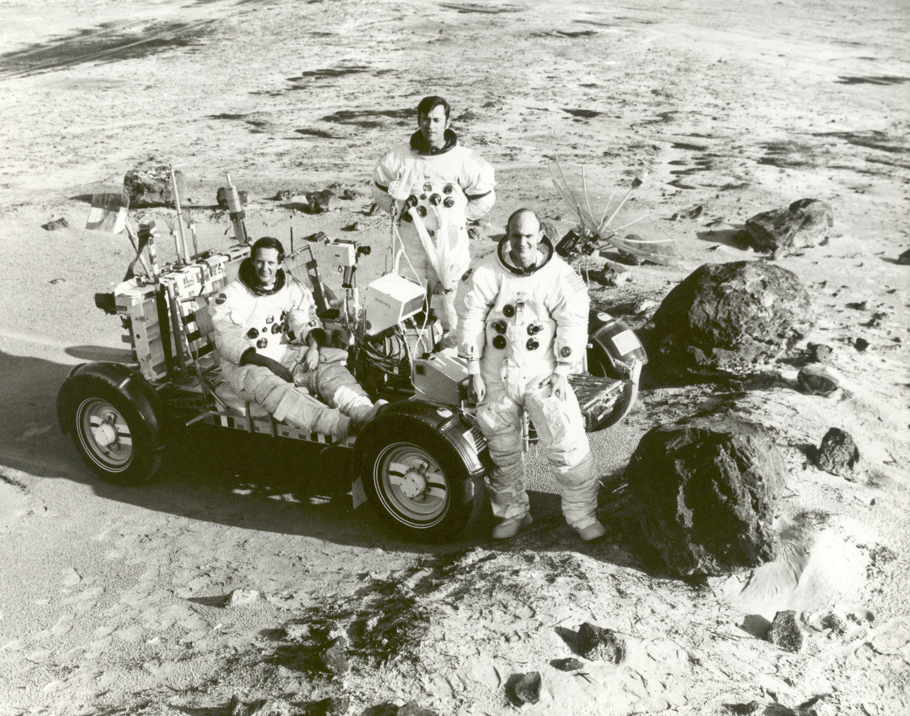

The Moon Landing was Faked
The moon landing can't be real, because there isn't a moon to land on! The government started the conspiracy that the moon landing was faked, to deflect us from the real truth. If such a large collection of cheese really existed in the sky, it would fall down and crush us all! And when the "moon" is in a crest shape, where is all of the unused cheese stored? It's obvious that the moon is just a projection in the sky, to increase cheese sales - like how seeing the bat-signal increases bat-merch sales.
In the photograph to the right, you can see these so-called astronauts on the surface of the moon - but it clearly isn't made of cheese! The ground is clearly a light grey colour, which doesn't sound like any cheese I've ever heard of. This photo must therefore be from a crudely made movie set, as making enough cheese to fake an entire moon would've taken far too many cows. This is the same reason the moon in the sky must be a projection - there just aren't enough cows on Earth to make a real moon.
Listen to this audio recording of a KGB agent saying they faked the moon landing:
Transcription:
My name is Anastaysia Putin, and I am a former KGB agent. We teamed up with the Americans in 1969 to convince the world that the moon landing happened. I am making this recording, so that it can be released to the world upon my death, as proof that the moon landing was faked. Let it be known that I, Anastaysia Putin the Third, am the one who has revealed this. The governments of the world are trying to stop their peoples from learning the truth, but I will bring the truth regardless. Do svidaniya, comrades. Also, make sure to like and subscribe, and purchase from our merchandise store.
back to topSources
This website strives to give you the best sources possible, which is why we've decided to show you what they are below. All of these sources are trustworthy and come from established scientific journals, so you can be sure that our information is 100% accurate!
mining bitcoin, please keep this tab open...